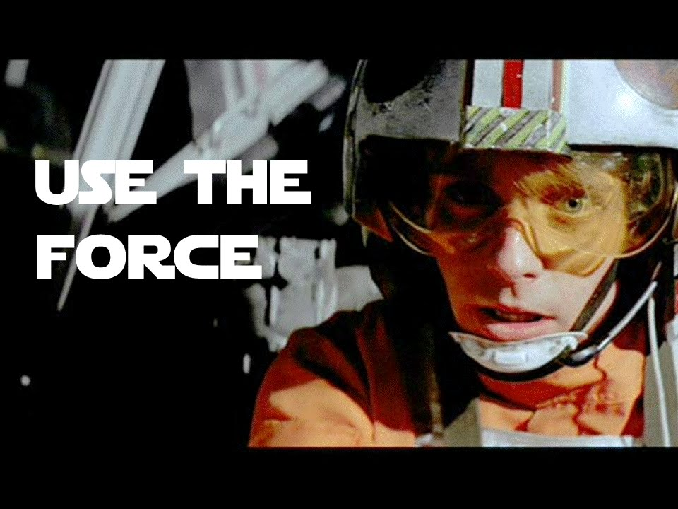

class: center, middle # From Junior to Jedi ??? Remember to breathe! `P` for presenter mode. `C` to open a cloned window. --- class: center, middle --- class: left, middle # Agenda 1. Introduction 2. Save the world! (With JavaScript) 3. Free and Readily Available Resources 4. Choose your weapon (blaster or lightsaber?) 5. Trust your feelings 6. Search your feelings 6. Use your skills for good 7. Work with others to defeat The Empire 8. Bring Balance to The Force --- class: center, middle # Introduction --- class: center, middle Questions? Can't quite hear me? # Interrupt me! ??? I can get nervous and start talking fast, so if I'm talking too fast, or you have questions, please interupt me. --- class: center, middle # About me --- layout: false class: center, middle # Carmen Long ## Twitter: [@Carmalou](https://twitter.com/carmalou) ## GitHub: [Carmalou](https://github.com/carmalou) ## Blog: [www.carmalou.com](http://carmalou.com/)  ??? Hi! My name is Carmen, and I'm a web developer with Weather Decision Technologies. In addition to wanting to save the world, I'm a pretty big Star Wars fan.... if you can't tell. --- class: center, middle I am self-taught using Codecademy, CodeSchool, Books and lots of other resources. --- class: left, middle * 5 years of experience with content management systems * 3 years of messing with HTML and CSS * 1 year of messing with JavaScript (Over the course of 2 years) * 8 months of professional experience as a Web Developer --- class: center, middle Why give a beginner talk? ??? I went to my very first tech conference last year. It was Thunderplains, and while it was super cool, I really didn't get anything from it. I had some experience with JavaScript, but every single one of those talks went over my head. I go back now and watch the videos and I get stuff out of it now, but I really wished then that there would be a talk on my level. So since I've learned more I've wanted to make that happen. And here I am with this talk. --- class: center, middle Why Star Wars? ??? Well, I always try to make my talks funny. I've given a few lightning talks at OKCjs, and they're also beginner talks because beginner talks are really my thing. But a large majority of attendees are already familiar with the concepts I like to cover. So I try to make things humorous for them. Also, I feel like learning JavaScript is kind of akin to Luke's journey to becoming a Jedi. Not just because you have a cool superpower at the end (and let's be real, js IS a pretty cool superpower). But also because Yoda was not a really hands on teacher. He was just kind of like, 'figure it out, you will.' And Luke did, but he didn't have a handbook or syllabus or agenda. And learning JavaScript is kinda like that. Yes you'll have help along the way, but it's really mostly going to come from within. --- class: center, middle My goal is not to teach you JavaScript. ??? I'm going to list off several resources and if you have specific questions you are absolutely welcome to shoot me an email or message me on Twitter, or even ask them here. I would actually love that. I love helping people get started. But we only have an hour, and there's no way I could teach you JS in an hour. --- class: center, middle My goal is to inspire you to start and complete a project to help others. (And to do so with JavaScript.) ??? I am a big believer is giving back. JavaScript is a great way to do that. It doesn't cost anything but time, and what you create can make a huge impact on people, and help them in a multitude of ways. --- class: center, middle # TwisterJS ??? Just to show you it can be done, this is the project that I am working on. It's called TwisterJS and it's whole goal is to work with underprivileged kids and teach them about tech. The first app teaches the basics of HTML. I started this project with less than 6 months professional experience, and I had never built my own project before. --- class: center, middle ??? This is when I went to Tulakes in Putnam City district (which is one the poorest elementary schools in the district. As well as one of the lowest performing). I had the kids test the app to get a feel for what they could do and they did great! I will be returning next year to work with a new set of 5th graders. --- class: center, middle # Save the world! (with JavaScript) ??? So let's get you started on your own project! --- class: center, middle --- class: center, middle # Free and Readily Available Resources ??? I wouldn't be much of a Jedi master if I didn't tell you how you could get started. I'm going to briefly go over some resources you can use to get started with JavaScript, but the majority of this talk is going to be about taking your skills -- whereever you are at -- and using them to help others. --- class: left, middle 1. Learn 2. Practice 3. Reference 4. Connect ??? I've divided these into four distinct types. --- class: center, middle # Learn --- class: left, middle * [Free Code Camp](http://www.freecodecamp.com/) * [Codecademy](https://www.codecademy.com/) * [Learn-JS.org](http://www.learn-js.org/) * [Coursera](https://www.coursera.org/) * [JavaScript.com](https://www.javascript.com/) * [NodeSchool](http://nodeschool.io/) * [CodeSchool](https://www.codeschool.com/) * [iTunes University](https://itunes.apple.com/us/genre/itunes-u/id40000000?mt=10) * [YouTube](https://www.youtube.com/) ??? I've tried to focus on free resources, but not everything on this list is free. CodeSchool has a monthly fee (but in my opinion it is absolutely worth it) and iTunes U sometimes has a fee too. --- class: center, middle # Practice --- class: left, middle * [JSFiddle](http://jsfiddle.net/) * [Codecademy Labs](http://labs.codecademy.com/) * [GitHub](https://github.com/) ??? Personally, I prefer Codecademy Labs over JSFiddle. I had a lot of trouble figuring out JSFiddle at the beginning, but both of these allow you to test your code in the browser, and are very helpful in that they let you know what errors you have in the code, such as missing semicolon, etc. JSFiddle allows you to input HTMl and CSS, so that is pretty helpful. Codecademy labs doesn't have that feature. --- class: center, middle # Reference --- class: left, middle * [Mozilla Developer Network](https://developer.mozilla.org/en-US/) * [Stack Overflow](http://stackoverflow.com/) * [Eloquent JavaScript](http://eloquentjavascript.net/) * [JavaScript Enlightenment](http://www.javascriptenlightenment.com/) * [JavaScript for Cats](http://jsforcats.com/) * [You Don't Know JS (series)](https://github.com/getify/You-Dont-Know-JS) ??? I'm on MDN and Stack Overflow basically everyday. They are really great references. The others are books. I'm not much of a book learner, I usually end up skimming and not reading the whole thing. But if book learning is your thing, definitely check these out. --- class: center, middle # Connect --- class: left, middle * [Twitter](https://twitter.com/) * [GitHub](https://github.com/) * [UserGroups](http://www.meetup.com/) ??? No man is an island, right? I wouldn't have gotten where I am today if it weren't for meeting some really kind generous people through meetups. That's a huge part of what landed me my job. When I get totally stumped on something I post it on Twitter and I've gotten a huge amount of help that way too. --- class: center, middle # Choose your weapon (blaster or lightsaber?) --- class: left, middle One of my favorite things about JavaScript is that it isn't dependent upon a specific operating system. Meaning -- anyone can learn it. Whether you're a farmer from Tattooine, or a rogue Princess, or even a scruffy-looking nerfherder. --- class: center, middle --- class: left, middle That said, there are some tools you do need: * A text editor (or IDE) * A browser --- class: left, middle I use Google Chrome, because I really like the dev tools. I use Atom for my text editor because it's free and works well on my Mac. --- class: left, middle And really those are the only two things you need to get started. That and lots of practice and patience. --- class: center, middle --- class: left, middle Of course there's a huge variety of other tools out there that you can use as well. --- class: center, middle # Libraries --- class: left, middle There are loads and loads of libraries out there. You can be old school and go with jQuery, or you can be fancy and go with a newer framework like Angular. ??? As far as determining which library or framework you are going to use, it really just depends on what you are attempting to do. I won't tell you which to use, but I will say I use Angular, and got started on jQuery. The important thing here is to pick one or two and learn them well. --- class: center, middle # Beware of the Dark Side --- class: left, middle Libraries and Frameworks are really great in that they have loads of shortcuts and make things a lot easier on you. You get your stuff out faster with less frustration, so it sounds good all around, right? --- class: center, middle --- class: left, middle The problem with using libraries early on is that you don't really understand what is making your code work. There's nothing wrong with using a library to help you do something faster or easier, but if you don't have a firm grasp of the basics, you won't know where to start for debugging. --- class: center, middle <img src="images/obi_wan_sith_absolutes.jpg" height="100%" width="100%"> ??? Again, not saying don't EVER use a library/framework, just use your judgement. gif: 'Only sith lords deal in absolutes' --- class: center, middle # Trust your feelings --- class: left, middle When am I ready to start learning something new? Ie. Library, Framework, new language, etc. ??? Unfortunately no one can really answer this question for you. But I do have a good rule of thumb that works well for me. --- class: left, middle Could you complete the task without the library/framework? Do you understand how to do this in the first or most recent language you learned? Do you understand what you are doing without the library/framework? ??? If you answer yes to these questions, you are probably fine using a library/framework and/or learning something new. At this point I'd like to switch gears and talk about doing work to benefit your community. --- class: center, middle # Search your feelings --- class: left, middle Select a project that has personal meaning for you. Learning to code can be a really frustrating process. (Seriously, ask anyone.) If you select a project with meaning, you'll want to see it through to the end, **and** you'll have done some good in the process. --- class: center, middle When am I ready to start on my project? --- class: center, middle Right now!! ??? This one is a lot easier to answer....you're ready now. It's never too early to start planning and practicing on something that is important to you...especially if it benefits others! --- class: center, middle Think about things that really matter to you... ??? Here's a few examples of different things that use JavaScript (because JavaScript is awesome!) --- class: center, middle # Education --- class: left, middle * [Khan Academy Exercises](https://github.com/Khan/khan-exercises) * [Quill](https://github.com/empirical-org/Empirical-Core) ??? You're probably familiar with Khan Academy providing free video lessons to students on a variety of subjects. They're pretty cool and I've used them myself. This specific framework is available to build exercises and can be used independently of the Khan Academy application. Quill is another free tool for students that assists them with writing and proof reading. --- class: center, middle # Poverty --- class: left, middle * [Sheltr Web Application](https://github.com/sheltr/sheltr) ??? A mobile-friend web application that is local to Philadelphia. This application allows a person to enter a local address and find a nearby homeless shelter. --- class: center, middle # Healthcare --- class: left, middle * [OpenLMIS](https://github.com/OpenLMIS/open-lmis) ??? A system that works with under-developed countries to help make medicines and other healthcare supplies available [double check this] --- class: center, middle # Activism --- class: left, middle * [ActivateHub](https://github.com/activate/ActivateHub) ??? This site features a few cities, but allows the addition of more. Includes information such as community events, discussions, civic meetings and more. Data is on a calendar that can be downloaded to iCalendar, or subscribed to. --- class: center, middle # Civic Engagement --- class: left, middle * [Denver Street Sweeping](https://github.com/codeforamerica/denver-schedules) ??? This is a Code For America project that allows a person to enter their address and receive email or text alerts regarding upcoming streetsweeps. This helps keep people from getting tickets or their car towed. --- class: center, middle # Use your skills for good ??? I wanted to give some examples of cool things people are doing to help others, and they're doing it with JavaScript. So rather than thinking that you don't know enough to get whatever awesome idea you have up off the ground, I'm going to show you how to plan for it. Making a plan is good because it shows you very clearly what is and isn't workable within what you're trying to accomplish. It also will show you what you need to learn, so you won't have to worry so much about what you don't know. --- class: center, middle # The "Official" Six-Step Plan --- class: left, middle 1. Analyze the problem 2. Design the program 3. Code the program 4. Test and debug the program 5. Formalize the solution 6. Maintain the program ??? When I first started trying to plan out my own projects, I went looking around to see what other people recommended. What I found was lots and lots of debate. Some people weren't in favor of planning at all. Just start typing! Others were fans of planning out every little bit -- some in this camp were even saying you should write out your entire program by hand. Seems pretty verbose to me, and maybe not the best plan for a beginner. --- class: center, middle # What you should REALLY do --- class: center, middle First, figure out what you're trying to do, and if you can do it smaller. ??? The reason I say smaller is because wanting to help the homeless isn't really a plan. If you think back to the app above designed for helping the homeless, it was very specific in that the user put in an address, and the output was a list of nearby shelters. Once you've figured out what you want to do, you can start planning HOW to do it. --- class: center, middle # HOW are you going to accomplish your goal? --- class: center, middle ??? This is Mariah Smith from Hampton, Virginia. She was featured on the Mighty Girl page on Facebook for her project to hand out blankets and other supplies to the homeless in her community. She's even created a non-profit for her cause. It's pretty cool. You can see more about her in my notes if you look up the slides on GitHub. I'll tweet them out at the end of the presentation. --- class: left, middle What if we wanted to make an application to help this group? What might it look like? --- class: left, middle * Simple web application * User inputs the number of new donations * User inputs the number of outgoing supplies * App takes in information and outputs the remaining amount of supplies * App sends an alert when supplies reach X level ??? There are loads of ways to do this, but here is what I would want to do. Notice that I specified the information that went into the program, as well as what the application does with the information and what it returns. Really drilling down and specifying things like that will help you figure out what to do and what tools to use. --- class: center, middle # Special Considerations --- class: left, middle Things you'll want to consider: 1. Who is your user? 2. How are they accessing your product? 3. What browser are they using? 4. What is their technical ability? 5. Is there a specific language you want/need to use? 6. What problem are you trying to solve with this? 7. Can this be done in a simpler way? ??? Some of these things are going to be determined by sheer necessity. If JavaScript is the language that you know, you're likely going to be coding everything in JavaScript. If your project is to help Senior Citizens find local nutritional services, mobile probably isn't going to be your thing. However you'll DEFINITELY want that to work in Internet Explorer. --- class: center, middle Keep in mind that these considerations can be made in any order, and that the plan is expected to change as you make it. The big reason to plan out your project now is to avoid running into roadblocks later. --- class: center, middle # Use The Force --- class: center, middle  --- class: left, middle This is where you'll actually begin coding -- once you have a solid plan in place. Don't be afraid to change your plan as you go and keep learning as you work on your project. This is as much practice for you, as it is good for your community. --- class: center, middle # Test your project --- class: left, middle Remember when the Rebel Alliance decided to try to blow up the first Death Star in episode 4? Remember when they didn't do any practice runs first? --- class: center, middle --- class: center, middle # Don't do that with your code ??? Obviously their situation was different. It would've been pretty tough to try to practice that first, but you do not have that impediment. --- class: center, middle Don't just test your project with other devs. --- class: center, middle <img src="images/R2-D2_Droid.png"> --- class: center, middle Have non-devs test it too. --- class: center, middle <img src="images/C-3PO_droid.png"> --- class: center, middle If possible, find a few people from your target audience and have THEM test it too. --- class: center, middle --- class: left, middle Each person you have testing your app is going to give you different insights about it. Take them all into account, and consider if any meaningful changes can -- or should -- be made to your app. --- class: left, middle Don't just test your app as you intend it to be used. Try to test it as an unfamiliar user would use it. This means attempting to use your project in a way that doesn't make a lot of sense to you. Try doing things out of order. Essentially -- try to break your application. This mindset is why it's important to have non-devs test your work. --- class: center, middle # Work with others to defeat The Empire --- class: center, middle --- class: center, middle If you aren't already attending usergroups, start attending them. ??? You can learn alot at these groups and make great friends. I landed the job I'm at now because of people I met at these groups. --- class: center, middle Put your work on GitHub. ??? GitHub works really well as a place to test in a 'staging' type of environment, and it puts your work out where other devs can see it. They might have pointers for you. --- class: center, middle Promote your project and ask questions on Twitter. ??? Tons of devs on Twitter are willing to answer questions and just want to help. This can be a very valuable resource. --- class: center, middle # Bring Balance to The Force --- class: center, middle When you've completed your first project, keep working on updating it. ??? You don't know everything when you make your first project, so this is an opportunity to take the things you're learning and implement them on something you've already made. --- class: center, middle Find another project you can use to practice and help others. ??? Obviously working with others is crucial. But it's more than that. This can expose you to new ideas, new ways of doing things and new causes to be excited about. --- class: center, middle Help new devs. ??? This is a huge thing for me because even with all of the resources out there, it can still feel like you're in it alone. It's important to pass on what you've learned to people who are just getting started so they don't give up. it's good karma. --- class: center, middle --- class: center, middle Keep learning!! --- class: center, middle # Questions? Comments?